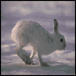
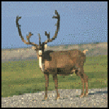
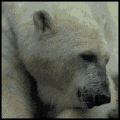
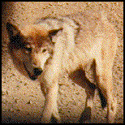

The polar regions have extremely cold winters and only a few months of warm temperatures in the summer. Parts of Russia, Norway, Greenland, the United States, and Canada, and all of Antarctica lie within the polar regions. The tundra is a vast, treeless land in the Arctic. Much of the ground there stays frozen all the time. The extremely cold winters prevent most animals from living in the polar regions during those months. During the short summer, these animals return to live and feed. Some of these animals are arctic hares, caribou, polar bears, and wolves.

In order to survive the cold during the winter, an arctic hare grows a pure white coat of long, thick fur. This white fur makes the hare blend in with the snow. The hare has large hind feet which allow it to run on top of the snow without sinking. During the summer, its fur turns brown or gray.

Caribou are actually reindeer that live in the North American Arctic lands. As spring approaches, huge herds of caribou travel north to spend their summer on the tundra. Unlike other types of deer, both the male and the female caribou have antlers.

A polar bear is one of the largest carnivorous animals in the world. It is so powerful that it can kill a seal with one blow of a paw. In October, a female polar bear digs a large hole in the snow called a den. In her den, she gives birth to one or two cubs and does not come out with them until spring.

Wolves are predators and will eat almost anything, from caribou to mice, depending on the time of year and what food is available. Wolves live in groups called packs. A wolf pack usually contains about six wolves. One male wolf (the Alpha Male) leads the entire pack. One female wolf leads the females and the young. The Alpha Male shows he is the leader by holding his head up and raising his tail. The less important wolves crouch or roll over in front of him.